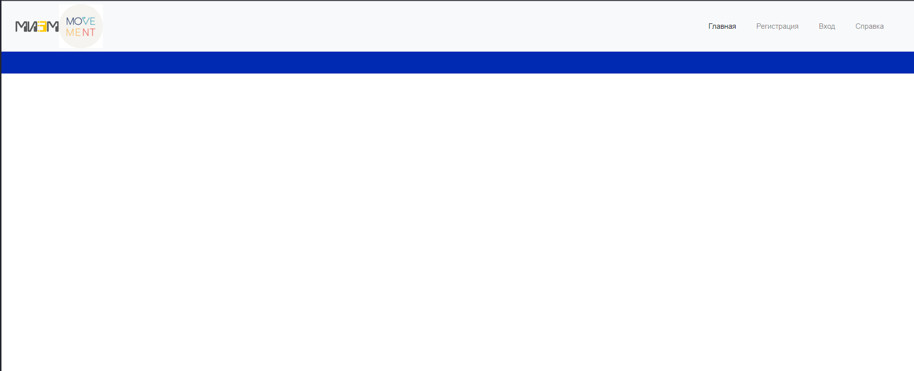
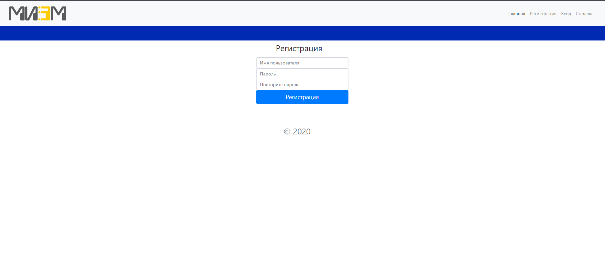
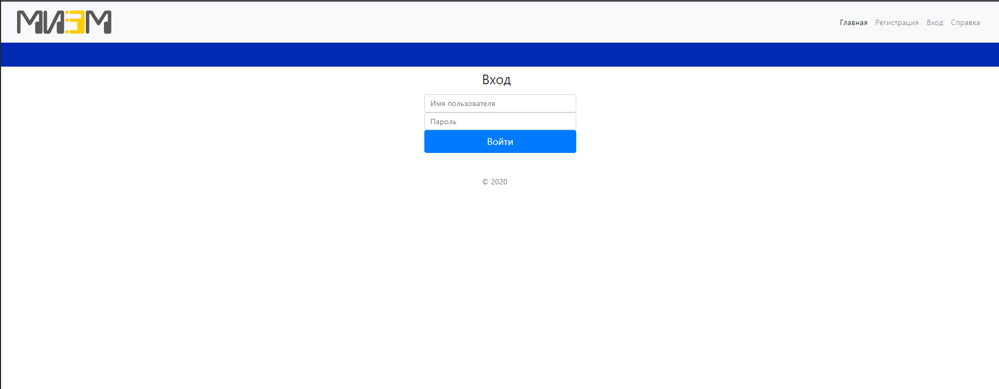
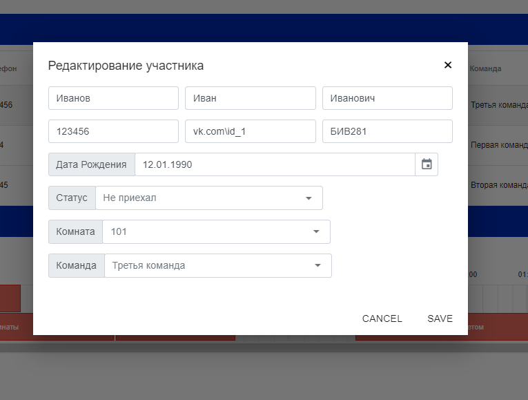
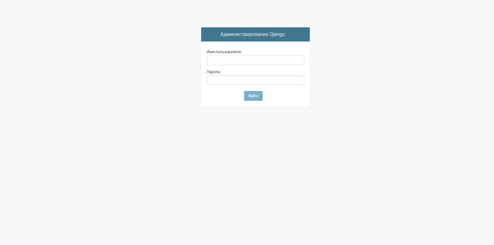
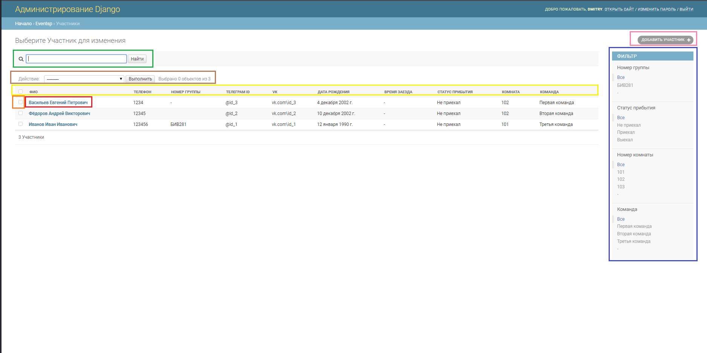

Как пользоваться¶
Пользовательская часть¶
Данная часть веб-приложения будет использоваться всеми организаторами мероприятия.
Главная страница¶
Пользователю доступен переход на страницы регистрации и авторизации, а также страницу справки.
Страница регистрации¶
Для регистрации пользователь должен ввести логин, и два раза пароль.
Причем, если пользователь с таким логином уже существует в базе, будет выведено текстовое сообщение
На поле пароля также введены ограничения: длина - не менее 8 символов, пароль должен содержать цифры и буквы в верхнем и нижнем регистрах.
Страница авторизации¶
Cтраница для авторизованных пользователей¶

На этой странице зарегестрированному пользователю доступен просмотр списка участников (вверху страницы) и расписание для организаторов(внизу страницы)
Пользователю доступны следующие действия: обновить расписание - обновляет только таблицу с расписанием, переход по гиперссылке на стрину участника во ВКонтаке и редактирование информации о пользователе.
Форма редактирования участника:
Note
Поле “комната” будет отображать только те комнаты, которые свободны, в зависимости от количества мест в комнате
Административная часть¶
Страница авторизации¶
Доступ в административную часть сайта есть только у некоторых пользователей, права которых определются Суперпользователем
Главная страница¶
На данной странице пользователю доступны списки записей, например: Нажатие на “Участники” перевеёдт пользователя на страницу со списком участников. К аналогичному результату приведет нажатие на кнопку “изменить”. Отмечены жёлтым цветом.
“Добавить” переведёт пользователя на страницу создания новой записи в том списке, напротив котоого находится кнопка
Зёленым цветом выделен список последних действий всех администраторов сайта(обновляется при обновлении страницы)
При нажатии на запись в списке последних действий - произойдет переход на страницу редактирования этой записи.

Страница просмотра¶
На этой странице пользователю доступен список всех записей. А так же набор фильтров(выделены синим), обновляющийся по мере появления новых записей в списке, поисковая строка (выделена зелёным), сортировка списка по названием того или иного поля(выделено жёлтым).
Пользователь имеет возможность добавления новой записи в список - кнопка “Добавить участника” (выделена розовым) и ипри нажатии на первый атрибут люой записи откроется страница редактирования этой записи.
Оранжевым выделен флажок для обработки нескольких записей одновременно, выпадающий список с действиями выделен коричневым.
Страница редактирования/добавления записи¶
Пользователю доступно редактирование всех полей. Особенное внимание стоит уделить аргументам, названия которых выделены жирным шрифтом - эти аргументы должны быть заполнены обязательно.
Для удобства работы с формой добавлены выпадающий календарь для поля даты и часы для поля времени.(выделены красным и оранжевым, соответственно)
Зелёным цветом выделена функция быстрого перехода к форме добавления/редактирования связанной записи, в нашем случае комнаты.
В правой части пользователю доступны три действия “Сохранить и добавить другой объект” откроет чистую форму, “Сохранить и продолжить редактирование” - созраняет запись и оставляет пользователя на той же странице, “Сохранить” - сохраняет запись и выходит к списку записей.